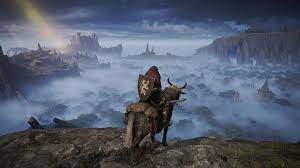

ResidenEvil 4 rmk é um sucesso de 2023
O remake de "Resident Evil 4" é o grande sucesso de 2023, trazendo gráficos aprimorados,
jogabilidade envolvente e reavivando a nostalgia dos fãs dessa icônica franquia de terror.
Ler mais
Eleito melhor jogo de SAMURAI do ano
"Sekiro: Shadows Die Twice" é eleito o melhor jogo de samurai, conquistando fãs com sua
jogabilidade desafiadora, ambientação excepcional e a maestria da espada shinobi. Um verdadeiro
marco nos jogos de ação.
Ler mais
Conheça sobre o mellhor top lainer
Conheça Sett, o melhor top laner. Com sua força bruta, habilidades únicas e estilo de luta
inigualável, ele domina as rotas e impõe respeito em Summoner's Rift.
Ler mais

Considerado melhor jogo de 2022
"Elden Ring" é considerado o melhor jogo de 2022. Com a genialidade de Hidetaka Miyazaki e o
mundo vasto de George R.R. Martin, ele encanta jogadores com sua história envolvente e desafios
épicos.
Ler mais